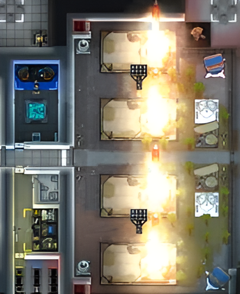
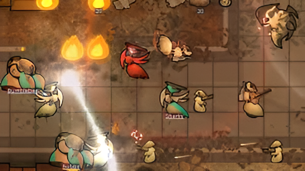

Community and Modding
Community and Modding RimWorld has fostered a dedicated community of players and modders. The Steam Workshop and other platforms host a wealth of mods that introduce new gameplay elements, enhance graphics, and even overhaul mechanics. The active modding scene ensures that players can always find new ways to enjoy the game, extending its longevity and replayability. The RimWorld modding community is incredibly diverse, producing mods that enhance nearly every aspect of the game. From quality-of-life improvements and new gameplay mechanics to complete overhauls and aesthetic changes, there’s something for every player.
Crafting and Research
The game features an extensive crafting system, allowing players to create weapons, clothing, and other essential items. Researching new technologies unlocks advanced building options and improves the colony's chances of survival. Players can craft items to trade with visiting merchants, helping them acquire necessary resources. High-quality crafted items can yield better trade deals, contributing to the colony’s economy. Crafting is essential for survival in RimWorld. Players must create weapons for defense, clothing for warmth, and furniture for comfort. Crafting items can significantly improve colonists' morale and productivity.
Combat and Defense
Players must defend their colonies against various threats, including raiders, pirates, and wildlife. Strategic planning for defense, including building fortifications and training colonists in combat skills, is vital for colony survival. Raids is one of the primary threats to a colony comes from raiders who attack to loot and destroy. Raids can vary in size and difficulty, with different factions and weapon types presenting unique challenges. Psychic Drone Event can cause mental breakdowns among colonists, leading to unpredictable behavior during combat situations. Players must manage their colonists’ mental states to maintain order during battles. Certain wild animals, such as bears or wolves, can become aggressive, posing a threat to the colony. Players must be prepared to defend against these unexpected encounters.
Fun facts about Rimworld
- Procedural Generation: Each game features a procedurally generated world, including diverse biomes, resources, and landscapes. This ensures that no two colonies will ever be the same, encouraging exploration and adaptation to different environments.
- Unique colonists: Every colonist has a distinct backstory, traits, and skills that influence their behavior and relationships. The interplay between colonists creates dynamic social interactions, rivalries, and friendships, leading to varied narratives in each playthrough.
- Psychological Factors: Colonists experience emotions and mental states that can change based on events in the game. This emotional depth leads to unpredictable behavior and outcomes, creating new challenges in each run. Sometimes your pawn would have a mental breakdown like destroying your furniture, trying to binge on food, trying to slaughter one of your animals, or going naked and pretending they are an animal.
- Endless possibilities: Players can tailor their gameplay experience by choosing different starting scenarios, difficulty levels, and mod options. This customization allows for a wide range of play styles and goals, making every playthrough unique.